|
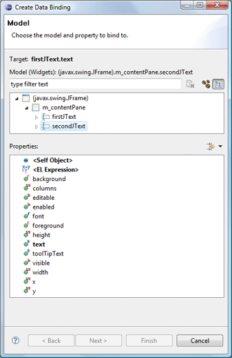 |
-
 Beans: any field of the current compilation unit may be selected.
Beans: any field of the current compilation unit may be selected.
|
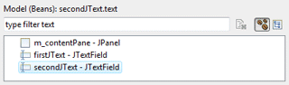 |
-
Widgets: any widget in the current compilation unit may be selected.
|
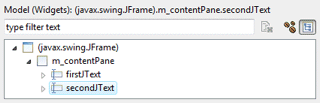 |
When any Model object is selected,
its properties (bean fields or standard Swing widget
properties) are shown in the associated Properties list. Properties may be expanded to show
their nested attributes. A drop down filter menu is
available to filter the Property list by type and hide or show the advanced
properties. Supported filters are
String, Boolean, Numbers, Color, Font and
Image.
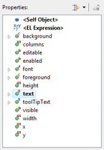
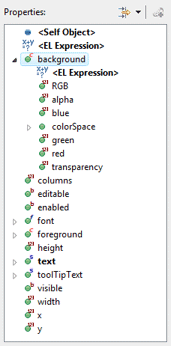
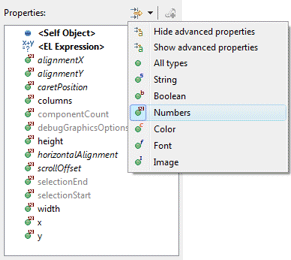
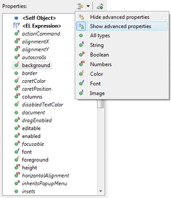
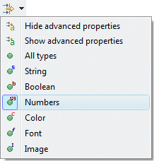
Once the model property has been selected, click the Finish
button to create a new data binding using default options. If you wish
to customize the properties of the data binding, click the Next
button to go to the second page of the wizard.
Properties
The second page of the Create Data Binding wizard is used to
customize the properties of the data binding itself. When creating a
binding, the update strategy from
target to model and model to target may be specified as well as
any strategy-specific properties (validators and converters).
|
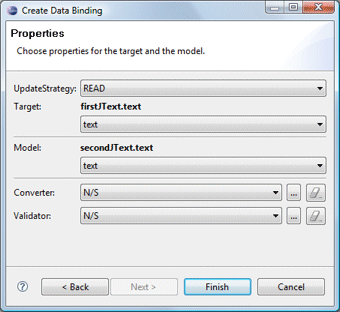 |
|
When the Target or Model is a Text widget and the text
property is selected, the triggering event may be specified as Swing.Modify,
Swing.FocusOut or Swing.NONE.
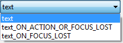
Predefined update value strategies - READ_ONCE,
READ and READ_WRITE - may be selected.
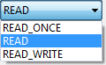
|
Source
Clicking the Finish button will generate
the necessary data binding code which may then be seen in the Source
view. An initDataBindings() method is created, if it does not
already exist and a call to that method is added to the end of the
widget creation process. Within the initDataBindings()
method, any needed bean properties are created followed by the
creation of each binding.
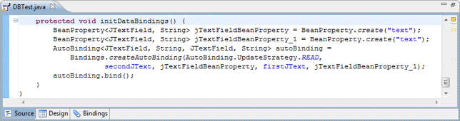
Warning: do not edit the
initDataBinding() method by hand (without carefully matching the
code generation pattern used by the tool) as it will be regenerated
in its entirety any time the tool needs to add, remove or update a
data binding.